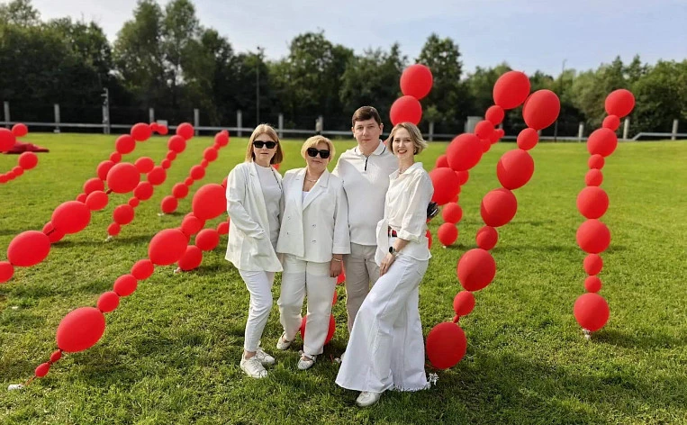

51партнёр
Рынок становится ближе.
Партнёрская сеть из 51 застройщика. С крупнейшими застройщиками региона работаем по прямым и эксклюзивным договорам.
ДЛЯ БУДУЩИХ АГЕНТОВ
Сити-Центр — агентство недвижимости в Воронеже.
С 2005 года помогаем людям решать жилищные вопросы.
А агентам — учиться, работать и расти в профессии.
ВОРОНЕЖ / РАБОТАЕМ С 2005 ГОДА
Город возможностей.
Твоя точка роста.
01 / ВОЗМОЖНОСТИ
ТВОЙ ТАЛАНТ + НАША СРЕДАЗа агентом стоит команда: юристы, ипотечные брокеры, специалисты по оценке, маркетологи и наставники. Работаем с покупкой, продажей и арендой недвижимости — от первого запроса до сопровождения сделки.
Партнёрская сеть из 51 застройщика. С крупнейшими застройщиками региона работаем по прямым и эксклюзивным договорам.
Обучаем за счёт компании: групповые и индивидуальные занятия, развитие с тренерами. Рассматриваем агентов с опытом и без него.
С 2022 года работаем на цифровой платформе Владис. Партнёрская сеть помогает проводить межрегиональные сделки.
Наставники, экспертная и юридическая помощь. В команде есть психолог и адаптолог, которые помогают освоиться.
02 / КУЛЬТУРА
КАРЬЕРА — ЭТО ЕЩЁ И ОКРУЖЕНИЕ
ИЮЛЬ 2026 / ФЕСТИВАЛЬ ВЛАДИС
Риэлторы, для которых люди — это главное.
Это наш принцип в отношениях с клиентами и внутри команды. В работе ценим честность, внимание к человеку и ответственность за результат. А вне работы вместе занимаемся спортом, путешествуем и отмечаем важные события.
Футбол, волейбол, йога, походы, экскурсии, благотворительные забеги и праздники для сотрудников и их детей.
В июле 2026 года команда участвовала в фестивале Владис и получила награду за качество услуг.
Руководители вырастают из команды. Здесь можно обсуждать не только следующую сделку, но и следующий этап карьеры.
03 / ПЕРЕД ЗНАКОМСТВОМ
Несколько вопросов, которые помогут начать разговор о твоей карьере.
СЛЕДУЮЩИЙ ШАГ — ЗНАКОМСТВО
Заинтересовало? Отправь СМС рекрутеру. Обсудим твой опыт, цели и возможности в Сити-Центр недвижимости.
На телефоне откроется СМС с готовым текстом. Останется нажать «Отправить».
Номер рекрутера: +7 906 670-17-54